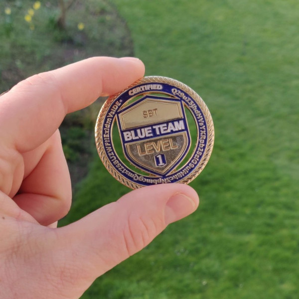

Tl;dr
Would I recommend BTL1?
100% yes!
Will it help you get your first job in cyber security?
100% yes!
Is it worth taking if you already work in cyber security?
If you have less than a couple years, it probably is worth it, yes!

Ntl;wr
Background
In 2020 I decided to embark upon a career in cyber security. My background was in electrical engineering and IT sales, among other things, so while I was computer-proficient, I didn’t have specific sysadmin or security skills. I knew that, before a company would hire me, I’d need to acquire some knowledge. I was working full-time at the time, and I didn’t want to quit to spend thousands of dollars (or pounds) on returning to uni or even on a bootcamp, so I decided I would self-learn.
The first thing I did was watch all of Professor Messer’s CompTIA A+, Network+, and Security+ videos. They’re amazing, and will give you an excellent foundation in IT as a whole. I decided against taking the A+ and Network+ exams; A+ seemed too simple, and I decided that, if I were to take a networking exam, I would likely take CCNA instead as it’s more practical. However, I did want to take Security+, as it’s the entry-level cyber security exam. So I did! It was harder than I expected, but I ended up getting ~95%.
The question then was, what next? Sec+ was purely knowledge-based - memorisation, in many ways - and the exam was mostly multiple-choice. It wasn’t practical. I did more research and almost all security exams - CySA+, CSX-P, CSA, SSCP - are multiple-choice.
Then I heard about Blue Team Level 1 from the Detections podcast (I tried to find a link, but it seems the Detections podcast has been discontinued, and the interview is no longer available). It sounded really good - a practical, hands-on course, covering a wide range of topics and software that you’d actually use! My concern was that it was a new course by a new company, and hence not well-known in the industry - in fact, at the time, the exam wasn’t even out. Also, compared with CompTIA exams, it’s not as cheap. What if I spent all that money only to find out the course sucked and companies don’t care? Well, after much more research, and asking many questions in the Discord (Josh is super responsive), I decided to take the plunge. It’s only money, and if it lives up to the hype, it will have been well worth it. Worst case I’m sure I’d learn something.
As an aside, since I’ve taken the exam, it has been added to Paul Jerimy’s amazing roadmap as a mid-level Blue Team certification, above Sec+ and CompTIA’s Cyber Security Analyst Plus (CySA+).
The course
The course covers a huge variety of content, split into fundamentals plus five sections: phishing, SIEM, threat intelligence, incidence response, digital forensics. All include both knowledge and explanations about the topic, as well as demonstrations of tools that relate to the topic, giving actionable instructions on how you can use it yourself. Most of these labs are ones you do on your own machine, but setup is explained. Might be worth doing it in a VM, as with all temporary or testing things.
The course has been updated since I took it with a few more lessons added, but at the time I saved each page as a PDF for study purposes. I’ve done a quick check and it looks like there’s about 170,000 words of content. There’s a lot there! It’s basically a full book, except, unlike CompTIA exams, it’s practical and not just lists of facts. And there are videos by none other than John Hammond.
What tools does it cover in a hands-on sense? Volatility. FTK Imager. Wireshark. YARA rules. Autopsy. Splunk. Hashing. MISP. pfSense, KAPE. Online tools for malware sandboxing, phishing analysis, URL and file reputation checking. Even password cracking, just for fun. Now, you won’t become an expert in any of these tools from this course - it is only Level 1, after all - but it gives you a very good introduction to all, and enough to let you learn more yourself if you need to.
Furthermore, it explains all of these tools in context. During IR or DF it explains what tools to use for what purposes, what to look for, and what order to do everything in. Phishing includes email analysis, including types, attacker techniques, defensive actions, and report writing. You’ll learn about different types of malware and threat actors, MITRE’s ATT&CK framework, threat intel sources. And loads more.
I was genuinely very impressed by the wide variety of hands-on and practical content. I do remember feeling some things could have been more in-depth, but having been working in a SOC for a few months, I’ve realised that the course covers all you need and more. And if you do want to learn more, it gives you a very good starting point.
The exam
The exam itself was brutal, but fun. You’re given 12 hours to investigate a compromised system (using the tools and techniques you learnt in the course, such as SIEM analysis and digital forensics), and then 12 hours to write it up. I normally finish exams quickly (during uni I was always one of the first to leave the exam hall), but I spent 11 and a half hours straight doing this - I knew there was more to find, but where? My write-up ended up being 29 pages long (including many screenshots), and even then I was nervous about what I had missed.
But my hard work paid off. I heard back soon after that I had passed with 91% - giving me a beautiful gold coin!
My advice for the BTL1 exam? Study the material! Everything you need to know is covered there - the rest is just up to your persistence and doggedness. It’s open-book (as is real life), so don’t feel you need to memorise everything - but looking things up takes time, and you only have 12 hours, so it’s definitely worth putting in the effort to learn and play around on your own (virtual) machine. I also did Splunk’s BOTSv3 (Boss of the SOC), which I highly recommend. You can find my write-up here.
After
Soon after I passed the exam I started applying for jobs, and quite quickly I got hired as a Security Analyst working in a SOC (working from home, for now - got to love COVID). At the time the only certs I had was Sec+ and BTL1. Don’t get me wrong, other factors helped - previous jobs, interview experience, my home lab, etc. However, these two exams - the knowledge from Sec+ and the hands-on experience from BTL1 - meant I felt confident discussing cyber security in the interview, both at a high level and in the weeds. Without BTL1 I doubt I’d be in the situation I am right now.
Summary
I’d recommend it to anyone wanting to get into cyber security. In fact, having worked in a SOC for several months, I’d also recommend it even to those who’ve been working in cyber security for several months but only in a single role (e.g. SOC) as the course covers a selection of security topics that you’ll unlikely to experience in your day-to-day job. I’m yet to use most of what I covered in the course, but knowing I have it in my back pocket helps immensely.
Blue Team Level 2 is in the works, and I’d definitely like to take it. This will be pricier (but, again, not excessively so), and is targeted at companies purchasing it for their staff. So, once it’s out, I’ll be having a chat with my manager!
In the meantime, Security Blue Team have released Blue Team Labs Online. Think TryHackMe, but for defensive activities. I’ve done a few of the free tier so far and they’re definitely worth trying.
Questions?
Feel free to contact me @jamesdeluk